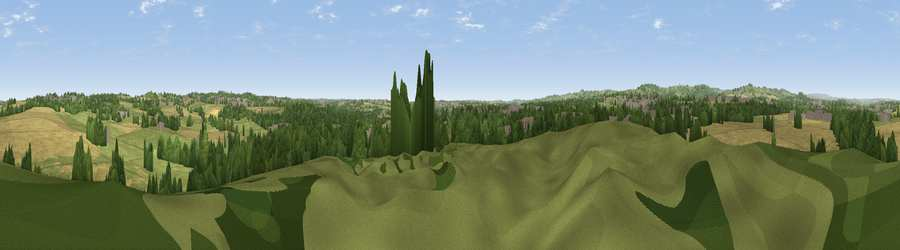

Viewpoint near Morton
#24589 in England · top 31% of its area beats it · near MortonWhere it is
The exact computed spot (SK 41175 60575). Click the marker for map links.
The view, rendered

A 360° render of this exact spot computed from the terrain model, tree cover and land cover — summer colours, afternoon light, calibrated against photographs of famous viewpoints. Real trees, hedges and buildings will differ in detail.
The panorama
Grey silhouette: terrain skyline in each direction (720 bearings, Earth curvature and refraction included). Dashed green: skyline with trees (+15 m) and buildings (+8 m) as obstacles. Blue strip: how far the ground is visible on each bearing.
Where the view opens
Wedge length = distance to the farthest visible ground on that bearing (vegetation-aware). Rings at 10, 25 and 50 km.
What fills the view
36% cropland · 31% woodland · 27% grassland · 6% built-up
Angular shares of the visible panorama (visual magnitude), not map area. Landscape diversity 0.55 (0–1 Shannon).
Key numbers
More beautiful places nearby
The staircase of upgrades: each row has a higher view potential than everything closer. Driving times are estimates from straight-line distance, calibrated against real road routing — check an actual route before setting out.
| Place | Direction | Drive | Score |
|---|---|---|---|
| Ashover Hay | W · 5 km | ~12 min | 54.9 |
| Viewpoint near Brackenfield | WSW · 6 km | ~12 min | 68.3 |
| Crich Stand | SW · 9 km | ~17 min | 73.0 |
| Alport Height | SW · 14 km | ~25 min | 73.9 |
| Tissington Hill | WSW · 27 km | ~43 min | 75.5 |
| Viewpoint near Woodhouse Eaves | SSE · 47 km | ~67 min | 77.7 |
| Viewpoint near Mow Cop | W · 55 km | ~77 min | 78.9 |
| Viewpoint near Mow Cop | W · 55 km | ~77 min | 80.2 |
53.14074, -1.38592 · source: screening · position refined by local search. Computed location — check access rights before visiting.